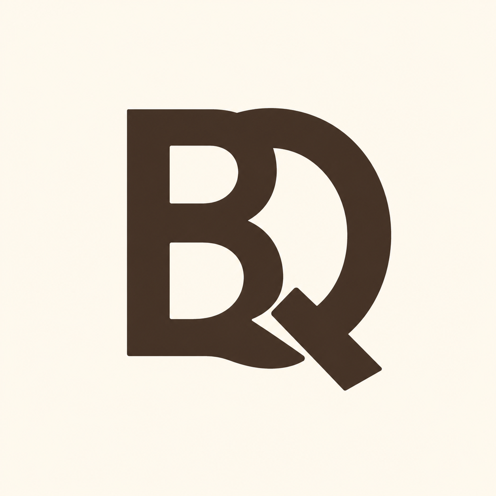
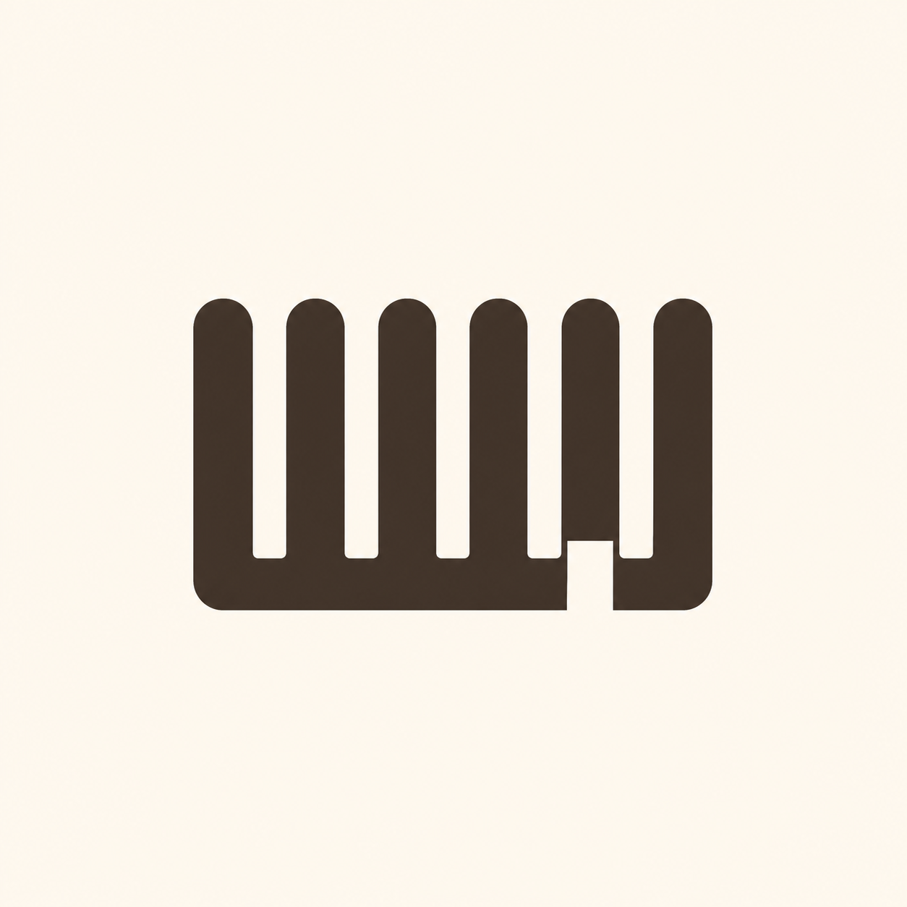
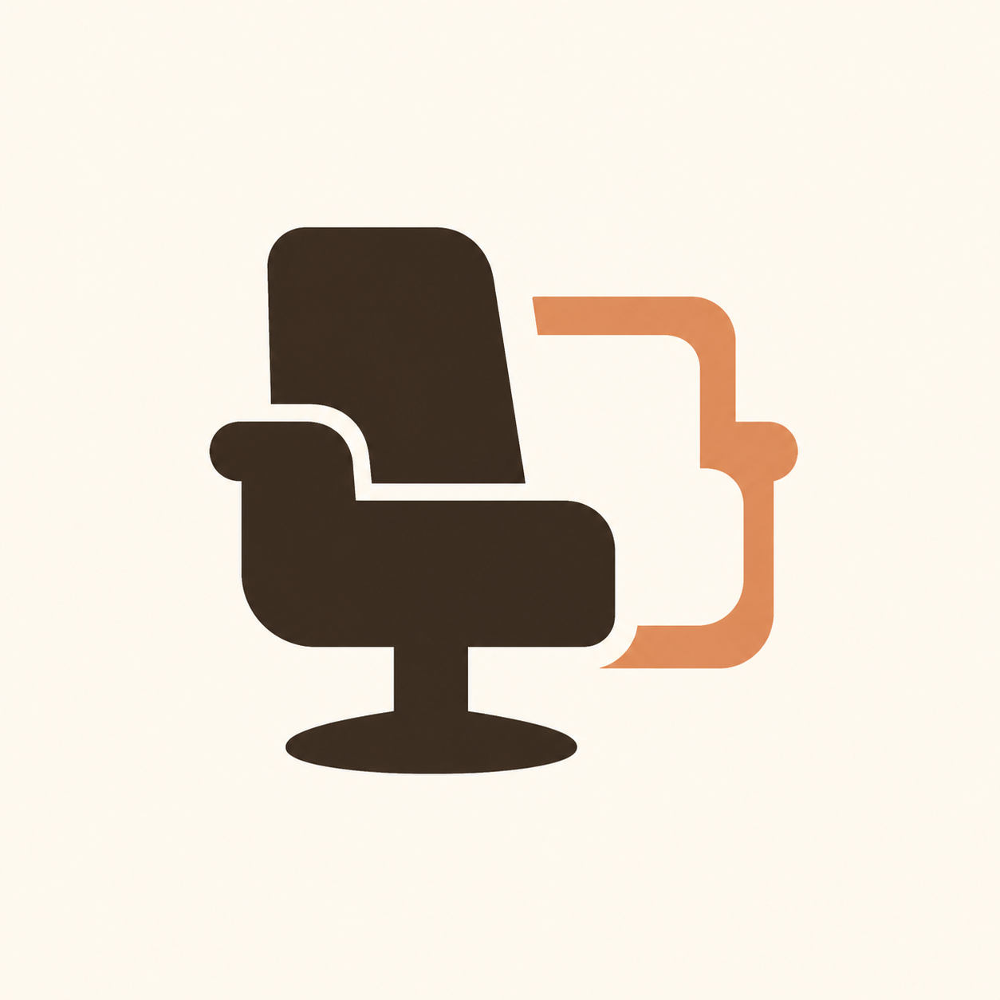

Category anchors: clearer, still not ownable

Literal overlap, weak ownership
The letters are immediately recognizable, but the construction is essentially a bold B and Q placed over each other.
Compact, readable, simple enough for a later small-size redraw.
Generic font-derived monogram; pointed cut and Q tail lean corporate/fintech rather than neighborhood barber.
Soft tonal variation and edge softness remain despite the flat-color contract.
Least structurally broken, but not distinctive enough to advance automatically.

Category cue became clipart
The repeated slots and one bottom opening are readable, but the result is simply a comb silhouette.
Immediate barber recognition and strong compact silhouette.
Literal comb/fence/barcode reading; generic teeth do not communicate a unique queue system.
Rounded clipart teeth plus soft lighting and non-flat cream.
Fails the contract's own literal-comb and fence boundaries.

Literal chair, not a brand mark
The category and second-place cue are visible, but the output reads as an office/salon chair illustration with another chair outline.
Clear “seat” recognition and friendly cocoa/apricot color relationship.
Literal furniture/salon clipart, accessibility-icon proximity, and too much pedestal/arm/back detail for 16px.
Soft gradients, vignette background, and disconnected secondary outline.
Category recognition is not enough to make the symbol ownable.